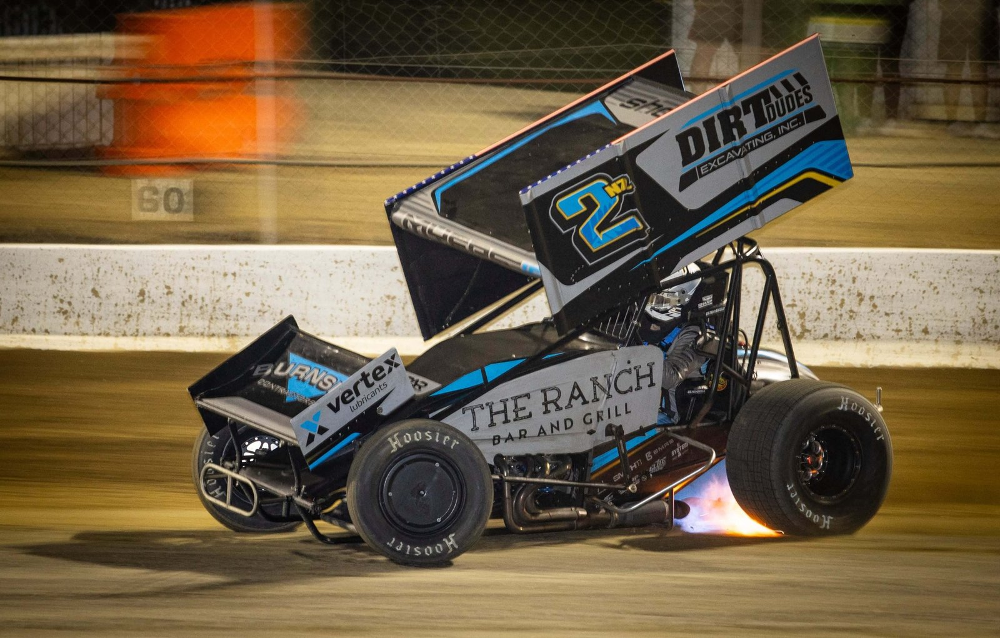

Joel Myers Jr. Wins Sprint Car Feature at Ruapuna Speedway
Myers started from the front row in the Daniel Anderson Racing No. 2NZ and won Saturday’s feature at the Daltons Canterbury Championships by 9.713 seconds, according to Petersen Media.

Joel Myers Jr. won the sprint car feature Saturday, Nov. 14, at Ruapuna Speedway in Christchurch, New Zealand, according to a Petersen Media report for Daniel Anderson Racing. The meeting was the Daltons Canterbury Championships. Myers, of Sebastopol, California, started from the front row in the Dirt Dudes Excavating, The Ranch Bar and Grill and Vertex-backed No. 2NZ, took the lead at the start and was not seriously challenged, the report said. He won by 9.713 seconds.
Myers set a 12.3-second track record in heat-race action, Petersen Media said, and was nearly able to set a new 10-lap track record as well. In the feature, he reached traffic on lap 8 and continued to work through slower cars while remaining in front.
Petersen Media said the Ruapuna start was Myers’ final race of the year in New Zealand before Daniel Anderson Racing turns to its Australian schedule. The team is next scheduled at the NAPA Sprintcar Invitational on Nov. 26-28 at NAPA Speedway at Victoria Park in Adelaide, South Australia. Ruapuna Speedway has not posted an official finishing order.